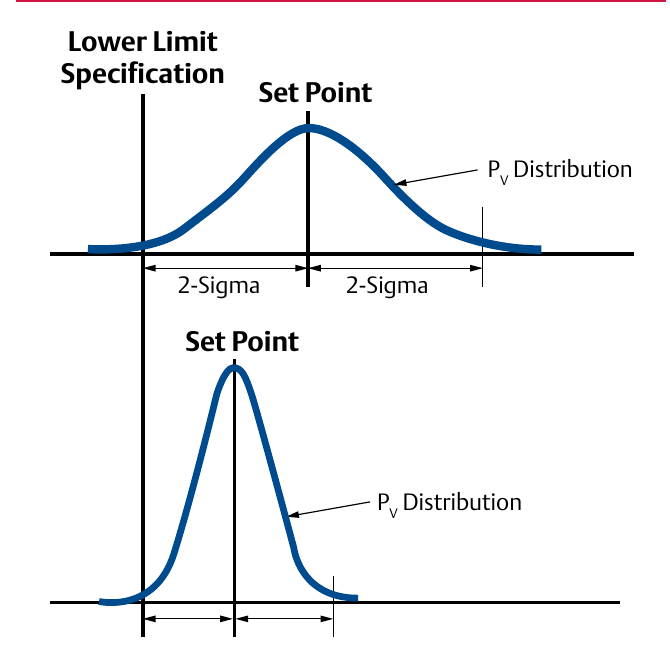

Process Variability — the Cost of Spread

- 1Upper curve — wide spread: a large 2σ band forces the set point back from the quality limit as a safety margin, wasting product/energy on conservative operation
- 2Lower curve — narrow spread: tight control lets the same set point sit closer to the limit with no off-spec product
- 3Up to 80% of real control loops fail to adequately reduce this spread — the control valve assembly (valve, actuator, and positioner as one unit, not sized separately) is a frequent, overlooked cause
After Control Valve Handbook, 6th ed., Fig. 2.1 — used directly. Component Index: cvh-cmp-process-variability-distributions.